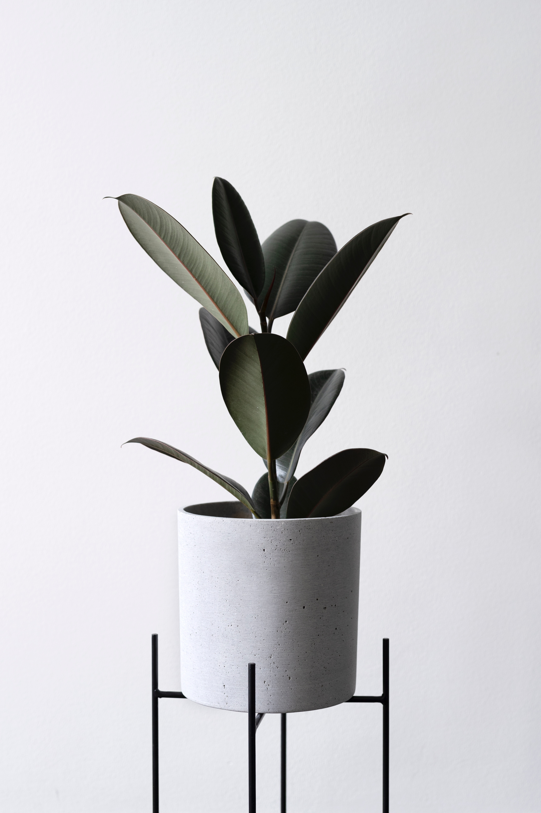

This classic move helps flatten the tummy by using your abs efficiently. Hold on behind the knees, scoop the belly in, and curl down to the floor to get into position. 
Now curl the head and shoulders up slightly, lower back still pressed to the floor. Pump the arms up and down in small motions at your sides. Breathe in for five and out for five until you hit 50 pumps. Sit up and repeat for a total of 100 pumps.
p태그81.5% br태그 70.56%